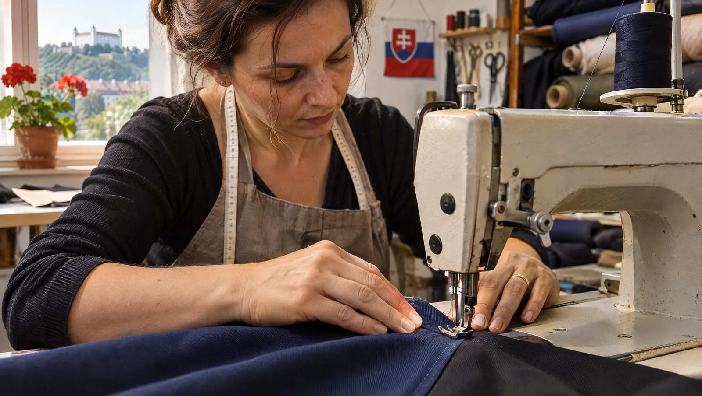
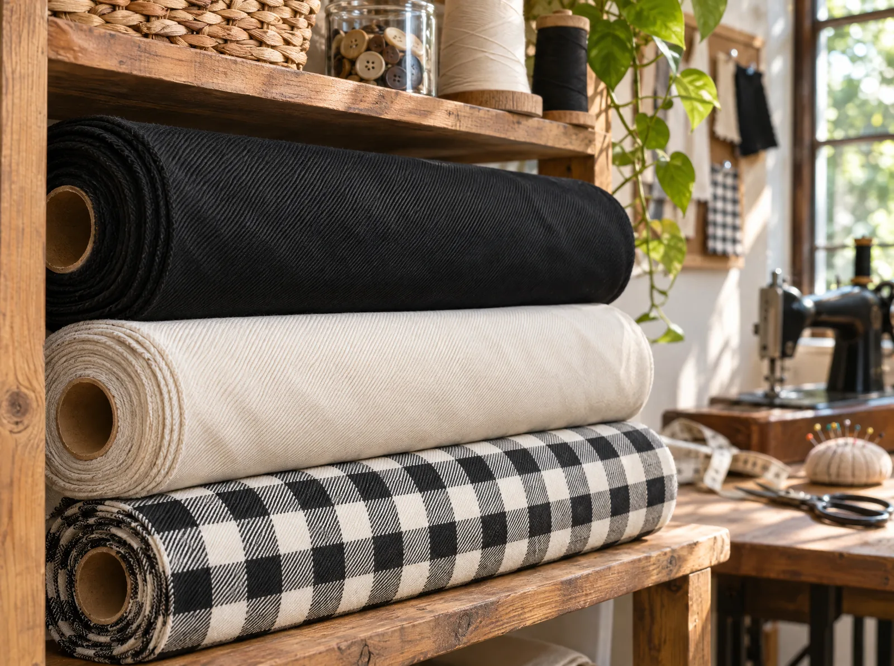
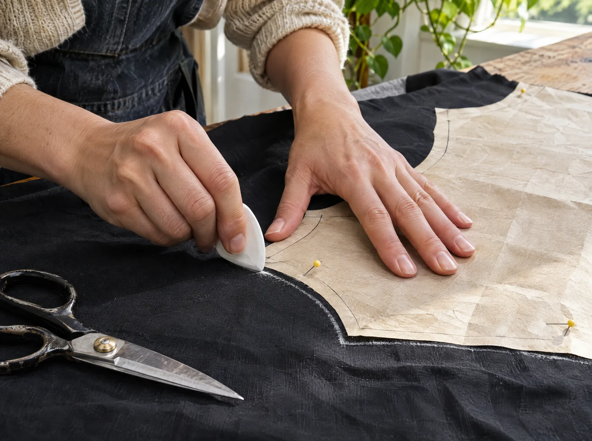
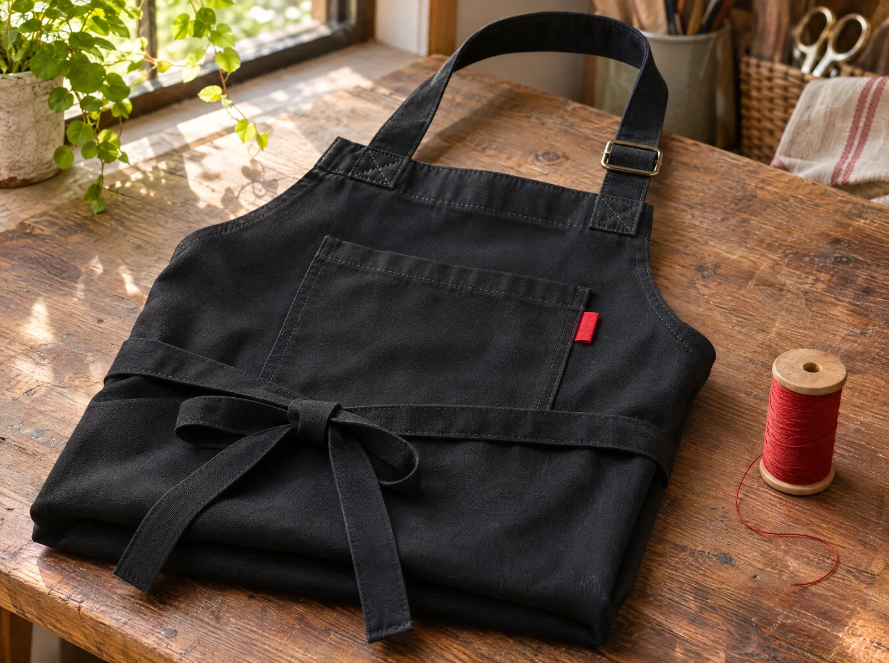

Šijeme kuchárske nohavice a zástery.
DAMI je rodinný obchod v Piešťanoch. Okrem značkového oblečenia si časť sortimentu šijeme sami, aby vydržala celú smenu v kuchyni.


01Látka
02Strih
03Hotový kusDAMI je rodinný obchod v Piešťanoch. Okrem značkového oblečenia si časť sortimentu šijeme sami, aby vydržala celú smenu v kuchyni.


01Látka
02Strih
03Hotový kus